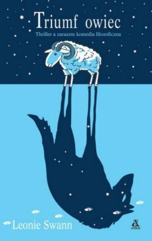

<!-- Poziom nagłówka tabeli -->
<div id="janek">
<div id="lovely-things-list">

<div class="row">
	<div class="span7 offset5"><p id="ostatnie">Ostatnie książki przeczytane przez <span class="imie">Janka</span>:</p> 
		<input type="search" class="search" placeholder="szukaj" /> 
		<!-- <ul class="filter">
      	<a href="#" rel='tooltip' title='Wyświetl wszystkie książki'><li class="btn" id="filter-none"><i class="icon-th-list"></i></li></a>
        <a href="#" rel='tooltip' title='Wyświetl tylko polecane książki'><li class="btn" id="filter-beverages"><i class="icon-heart"></i></li></a>
    </ul> -->
  </div>
</div>

<!-- Poziom tabeli i sylwetki -->
<div class="row"> 
	<div class="span5" id="containtersylwetka">
		<h1>Janek</h1>
		<p class="wzrost">175 cm</p>
		<aside class="sylwetkainfo">redaktor naczelny<br>bookznami.pl</aside>
		<div class="progress progress-info progress-striped active">
			<div class="bar" style="width: 18%;"></div>
			
		</div>
		<p><span class="label label-info">18%</span> przeczytane</p>
		<p>czyli ok. <span class="label label-info">2400 stron</span></p>
		<p>książki utworzyłyby wieżę <br>o wysokości <span class="label label-info">25 cm</span></p>
		<div id="cosadzisz">
				<a data-toggle="modal" href="#skomentuj"><div class="alert alert-info">
				<h4 class="alert-heading">Co sądzisz o naszym wyzwaniu?</h4>
				Dopisz się i zobacz, co napisali inni. &raquo;
			</div></a>
		</div>
		
		
	</div>
	
	
	
	<div class="span7" id="lista">
        
        <ul class="list unstyled">
          <li>
              
							<p class="author">Leonie Swann</p>
              <p class="name">Triumf Owiec</p> 
							<h6><span class="category">500 stron</span> • <span class="height">2 cm grubości</span></h6>
							<p class="recommend"></p>
							<p class="desc"><span class="readwhen label label-success">Owcza sensacja</span>
              <span class="description">	Kontynuacja rewelacji literackiej Sprawiedliwość owiec, największego przeboju roku w Polsce 2006 w kategorii proza obca, sprzedanego w 70 tysiącach egzemplarzy. Teraz znowu głos mają owce. Ale nie tylko... Do gry wkraczają również kozy, obcy niestrzyżony baran i tajemniczy Garou...</span></p>
          </li>
                    <li>
              
							<p class="author">Eric-Emmanuel Schmitt</p>
              	<p class="name">Oskar i Pani Róża</p> 
							<h6><span class="category">500 stron</span> • <span class="height">2 cm grubości</span></h6>
							<p class="recommend"></p>
							<p class="desc"><span class="readwhen label label-success">Opowiadanie</span>
              <span class="description">Kontynuacja rewelacji literackiej Sprawiedliwość owiec, największego przeboju roku w Polsce 2006 w kategorii proza obca, sprzedanego w 70 tysiącach egzemplarzy. Teraz znowu głos mają owce. Ale nie tylko... Do gry wkraczają również kozy, obcy niestrzyżony baran i tajemniczy Garou...</span></p>
          </li>
          <li>
              
							<p class="author">Polityka</p>
              	<p class="name"><a href="#" title='Trzęsienie kapitalizmu, czyli jak zaczął się kryzys i czym się skończy' rel="tooltip" class="niewidaclinku">Trzęsienie kapit...</a></p> 
							<h6><span class="category">500 stron</span> • <span class="height">2 cm grubości</span></h6>
							<p class="recommend"></p>
							<p class="desc"><span class="readwhen label label-success">Instrukcja obsługi XXI wieku</span>
              <span class="description">Kontynuacja rewelacji literackiej Sprawiedliwość owiec, największego przeboju roku w Polsce 2006 w kategorii proza obca, sprzedanego w 70 tysiącach egzemplarzy. Teraz znowu głos mają owce. Ale nie tylko... Do gry wkraczają również kozy, obcy niestrzyżony baran i tajemniczy Garou...</span></p>
          </li>
					<li>
              
							<p class="author">Luke Wroblewski</p>
              <p class="name">Mobile First</p> 
							<h6><span class="category">500 stron</span> • <span class="height">2 cm grubości</span></h6>
							<p class="recommend"></p>
							<p class="desc"><span class="readwhen label label-success">Web design</span>
              <span class="description">Our industry’s long wait for the complete, strategic guide to mobile web design is finally over. Former Yahoo! design architect and co-creator of Bagcheck Luke Wroblewski knows more about mobile experience than the rest of us, and packs all he knows into this entertaining, to-the-point guidebook. Its data-driven strategies and battle tested techniques will make you a master of mobile—and improve your non-mobile design, too!</span></p>
          </li>
					<li>
              
							<p class="author">Aaron Walter</p>
              <p class="name">Designing for Emotion</p> 
							<h6><span class="category">500 stron</span> • <span class="height">2 cm grubości</span></h6>
							<p class="recommend"></p>
							<p class="desc"><span class="readwhen label label-success">Web design</span>
              <span class="description">Make your users fall in love with your site via the precepts packed into this brief, charming book by MailChimp user experience design lead Aarron Walter. From classic psychology to case studies, highbrow concepts to common sense, Designing for Emotion demonstrates accessible strategies and memorable methods to help you make a human connection through design.</span></p>
          </li>
					<li>
              
							<p class="author">Haruki Murakami</p>
              <p class="name">1Q84, tom 3</p> 
							<h6><span class="category">500 stron</span> • <span class="height">2 cm grubości</span></h6>
							<p class="recommend"></p>
							<p class="desc"><span class="readwhen label label-success">Powieść</span>
              <span class="description">	W trzecim tomie tej fantastycznej powieści Murakamiego poznajemy dalsze losy Aomame i Tengo rozgrywające się w niezwykłym świecie roku 1Q84. Ona ukrywa się przed zemstą członków sekty za zamordowanie Lidera, a on czuwa przy łóżku nieprzytomnego ojca w mieście kotów. Czy mściciele trafią na ślad Aomame? Czy Tengo rozwiąże zagadkę powietrznej poczwarki? Czy Tengo i Aomame wreszcie się spotkają? Czy wydostaną się ze świata Little People i dwóch księżyców, czy też na zawsze pozostaną w zaskakującej rzeczywistości powieści wewnątrz powieści stworzonej przez Tengo, jasnowidzącą piękność, Fukaeri? Autor w kolejnym tomie "1Q84" odpowiada na te pytania, a do dwóch przeplatających się wątków dołącza trzeci...</span></p>
          </li>
					<li>
              
							<p class="author">Stephen King</p>
              <p class="name">Dallas '63</p> 
							<h6><span class="category">500 stron</span> • <span class="height">2 cm grubości</span></h6>
							<p class="recommend"></p>
							<p class="desc"><span class="readwhen label label-success">To dłuuuga historia</span>
              <span class="description">22 listopada 1963 roku w Dallas padły trzy strzały, które zabiły prezydenta Kennedy’ego i zmieniły świat. A gdyby tak można było temu zapobiec? Gdyby można było ocalić JFK i zmienić bieg historii?</span></p>
          </li>
          <li>
                
								<p class="author">Walter Isaacson</p>
                <p class="name">Steve Jobs</p> 
								<h6><span class="category">500 stron</span> • <span class="height">2 cm grubości</span></h6>
								<p class="recommend"></p>
								<p class="desc"><span class="readwhen label label-success">Biografia</span>
                <span class="description">Opierając się na ponad czterdziestu rozmowach z Jobsem, przeprowadzonych w ciągu dwóch lat, a także na wywiadach z ponad setką osób: członkami rodziny, przyjaciółmi, przeciwnikami, konkurentami i kolegami Jobsa, Walter Isaacson spisał wciągającą opowieść o pełnym wzlotów i upadków życiu oraz płomiennej osobowości twórczego przedsiębiorcy, którego wykraczająca poza wszelkie schematy pasja i perfekcjonizm zrewolucjonizowały sześć branż: komputery osobiste, filmy animowane, muzykę, telefony, tablety i publikacje cyfrowe.</span></p>
            </li>

        </ul>
			</div>
    </div>		
</div>
</div>